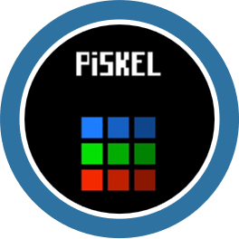

Ferramentas Utilizadas



Chase
O jogador assume o papel de um agente de segurança, encarregado de proteger o museu mais prestigiado da cidade. Um ladrão de arte, invade o museu e rouba uma relíquia valiosa. Sua missão é persegui-lo por todo o museu, evitar armadilhas e obstáculos, e recuperar a relíquia roubada antes que seja tarde demais.